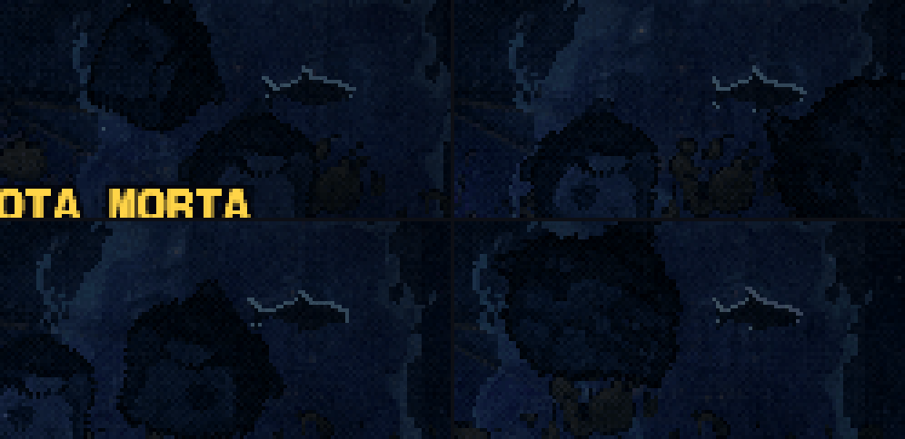
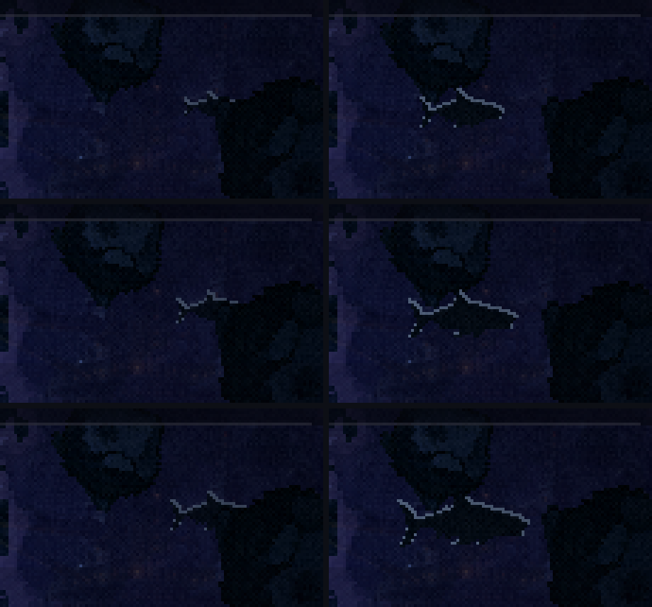
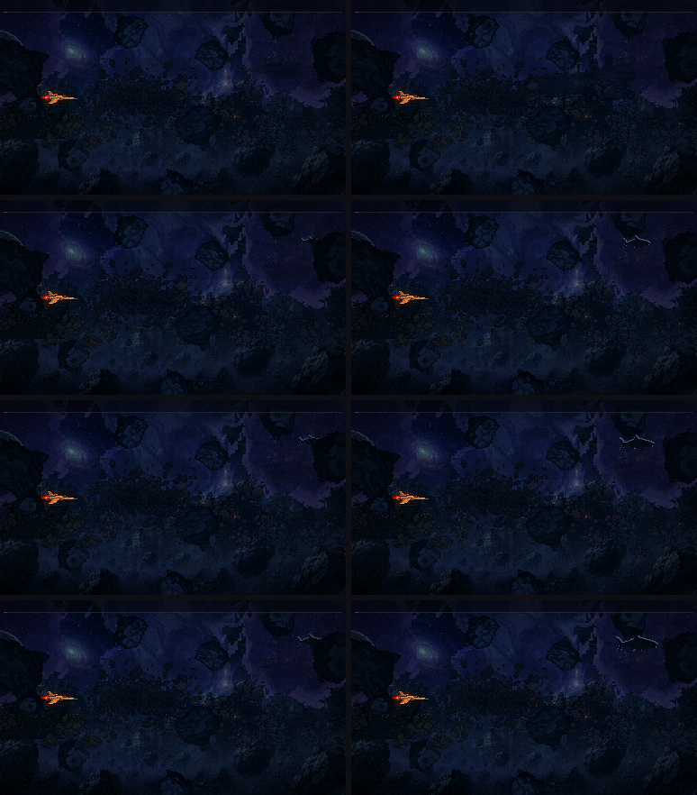
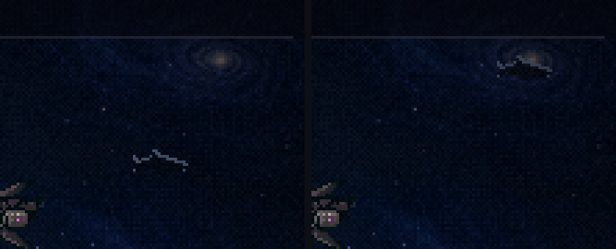
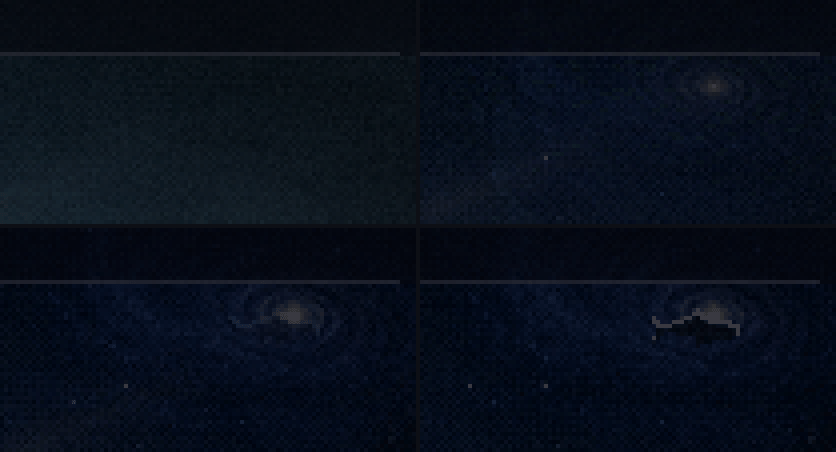
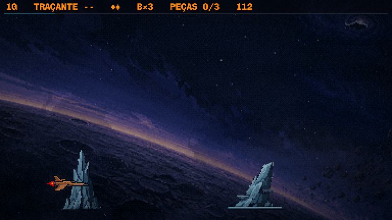

Leviatã novo · rodada 7 · a sombra no jogo
Bloco D · 19/10/2026. ← rodada 6 · A sua escolha: o aro, o nado quase parado e nada na F3.
aprovado "Ficou bom, a silhueta mostra que tem algo se aproximando/espreitando": ficam o médio (40 → 60 px) e o vislumbre na frente da galáxia. Com isso, o bloco D está completo.
Como ficou, ponto a ponto das suas notas:
- Colossal tem que parecer longe: ele ficou bem menor (de 40 a 60 px na F2; hoje vai de 58 a 133) e cresce pouco ao longo da fase, porque crescer 2,3× dizia "está vindo depressa". Ficou atrás dos cascos da frota morta, do cinturão e das rochas, logo à frente do planeta (atrás do planeta ele seria maior que um planeta). Quando um casco de nave capital passa na frente dele, a escala aparece sozinha.
- Só uma sombra: o casco quase preto e um aro frio de 1 px nas costas, assado em cada largura de 28 a 72 px (o aro de 1 px reduzido pelo jogo virava pontilhado).
- O nado quase imperceptível: 3 quadros por segundo, um ciclo de 5,3 s, e ele não anda pela tela.
- F3: ele não aparece. A nuvem o esconde, e o rabo sai dela.
Duas correções que só apareceram no jogo:
- A sombra precisa de fundo mais claro que ela. Com o casco no tom da rodada 6 (luminância ≈16, igual à do céu), ele sumia e sobrava só um risco do aro. Agora ele é quase preto e fica no trecho mais claro do céu da F2, à direita, contra a nebulosa.
- Na altura de hoje, a faixa do cinturão o cobria inteiro. Ele subiu para o céu aberto acima dela.
F2, em velocidade real no jogo



F2, o tamanho escolha


Fim da F1, o primeiro vislumbre confirme
Depois de romper a atmosfera, ele acende devagar (34 px), na frente da galáxia da pintura. O céu à direita é todo quase preto, e ali a sombra sumia. Contra o brilho da galáxia ela lê como corpo: um bicho eclipsando uma galáxia.



para decidir
- O tamanho na F2: pequeno, médio (no jogo, a minha aposta) ou grande.
- O vislumbre do fim da F1 na frente da galáxia: fica, ou prefere em outro lugar.